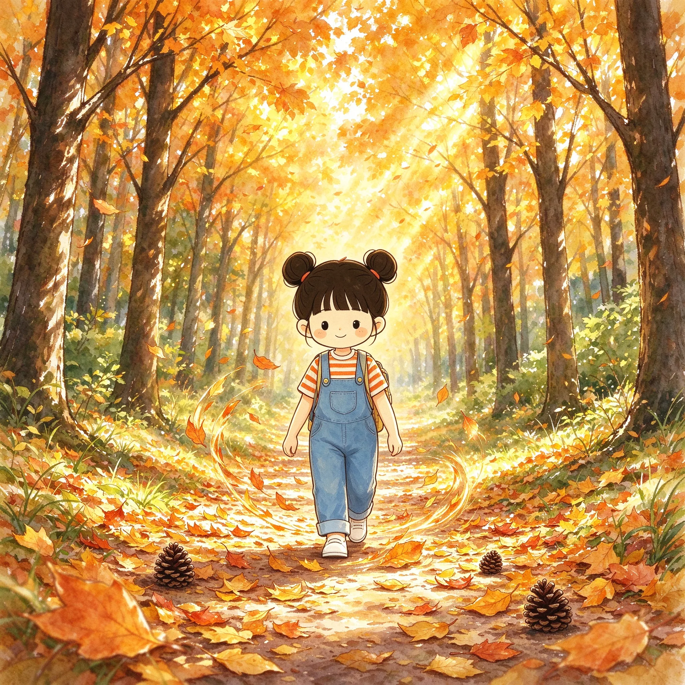

i
n
f
u
c
o
c
o
文創數字的異想世界
首頁
工具
遊戲
infu百寶箱
▾
金句
心靈療癒
故事
數位週邊
▾
數位商品
實體周邊
會員
關於
場景
春·雛菊散步
場景
春·櫻花長椅
場景
春·花田
場景
夜·推門暖光
場景
夏·海邊晨光

場景
秋·金葉散步
場景
冬·初雪窗
場景
月·長椅數星
場景
書·翻開星空
場景
月·月牙坐
場景
夜·城市橋
場景
咖啡·街角
場景
燈·暖燈籠
場景
螢·瓶中螢火
場景
星·指尖星光
留下 Email / LINE 索取infu世界場景
繼續探索
i
n
f
u
c
o
c
o
精彩角落
翻轉卡片，走進每一個 infucoco 場景。
每日一句
心靈金句
睡前故事
療癒故事
🎮 遊戲
療癒遊戲
心靈療癒
心靈療癒
LINE
首頁
工具
遊戲
金句
心靈療癒
故事
infu百寶箱
數位商品
實體周邊
會員
關於
🏠
←